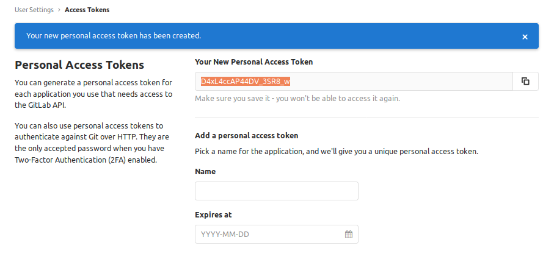
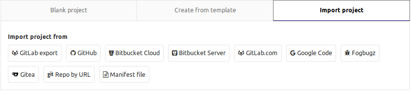

Despliegue de aplicaciones Web UD 2. SISTEMAS DE CONTROL DE VERSIONES PRACTICA 1. Crear y gestionar nuestro servidor de Git GitLab nació en 2011 como un proyecto dentro de GitHub y con el tiempo, evolucionó para convertirse en una alternativa que proporciona repositorios privados de código gratuitos (cosa que GitHub sólo ofrece en su modo de pago) mediante una interfaz muy ligera y simple.
La tarea a realizar en esta práctica consistirá en elaborar un documento (presentado a través de GitHub Pages o GitLab Pages) en el que especifiquéis los pasos a realizar para: - (2 puntos) Instalar GitLab en local permitiéndonos disponer de un repositorio Git propio en nuestra máquina.
Lo primero que tenemos que hacer es instalar las dependencias de GitLab:

Cuando tengamos las dependencias correctamente instaladas ya podemos instalar GitLab Añadimos el repositorio de GitLab media este curl
Y instalamos el gitlab-ce
Entramos al fichero /etc/gitlab/gitlab.rb y cambiamos el campo external_url por el dominio que vayamos a usar (En nuestro caso localhost)
Ahora ejecutamos el siguiente comando para que se aplique la conficuración realizada

- (1 punto) Realizar labores de administración inicial como por ejemplo: o Cambiar el puerto de acceso. o Impedir que usuarios nuevos puedan modificar su identificador. o Modificar el tiempo de expiración de la sesión.
Ahora accedemos a localhost o al dominio que hayas introduccido y veras una pantalla donde te pedira crear la contraseña de root Despues de crear la contraseña de root podras registrar a un nuevo usuario y disponer de una cuenta propia. Para modificar el puerto y restringir a los usuarios el cambio de username debemos cambiar el fichero gitlab.rb

Cuando tengamos los cambios realizados debemos ejecutar el comando
Podemos modificar el tiempo de expiración de la sesion entrando en la cuenta root de nuestro GitLab, entrando a admin area, en settings, en account and limit
- (2 puntos) Detallar ejemplos de procesos (vía llamadas a la API) como: o Alta, modificación y borrado de usuarios. o Bloqueo/desbloqueo de usuarios. o Establecer usuario como administrador. o Creación de proyectos.
Para poder usar la api lo primero que vamos a necesitar es generar un access token desde los settings del usuario
Gracias a este token podemos por ejemplo obtener todos los usuarios que hay en el gitlab
Usando la api podemos crear usuarios
Tambien modificar usuarios (Hay que especificar que usuario se tiene que modificar mediante el id)

Y finalmente borrar usuarios (Igual que al modificarlos hay que especificar el id)
Para bloquear un usuario debemos especificar el id en la ruta y añadir despues de el id /block
Para desbloquear lo mismo que cuando bloqueamos pero tenemos que poner /unblock
Para pasar un usuario a admin debemos actualizar el parametro is_admin usando el parametro admin=true en una peticion sobre el usuario
Podemos tambien crear proyectos desde la api mediante /projects
En esta captura creo un nuevo proyecto solo poniendole en nombre que va a tener. Si no se especifica usuario se atribuye directamente al usuario root. Para crear un proyecto para un usuario debemos agregar la ruta /user/:id-user
- (1 punto) Realizar labores de customización como por ejemplo: o Modificar la página de creación de un nuevo proyecto. o Modificar el logo y la descripción de la pantalla de login. o Modificar el favicon de gitlab.
Para modificar la apariencia de la pagina debemos acceder desde un usuario administrados a la admin area y entra a apperance En este ejemplo modifico la apariencia de la pagina de creación de proyectos
Tambien podemos modificar:
- (2 puntos) Detallar el proceso para poder importar proyectos de GitHub a nuestro
GitLab tanto por pantalla como utilizando la API.Para importar un proyecto de github a gitlab debemos entrar a crear un nuevo proyecto y a importar proyecto ahi debemos seleccionar github
Necesitamos generar un token desde github IMPORTANTE El mail tiene que ser el mismo tanto en github como en gitlab
Al acceder con el token en gitlab veremos todos los proyectos de github que podemos importar
Para realizar una importacion desde la api debemos usar la ruta /import/github Hay que añadir el token que hemos generado antes
Tambien hay que añadir el id del repositorio con el parametro repo_id

- (2 puntos) Documentación correcta en GitHub Pages o GitLab Pages.